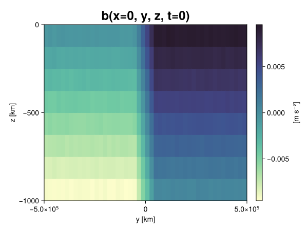
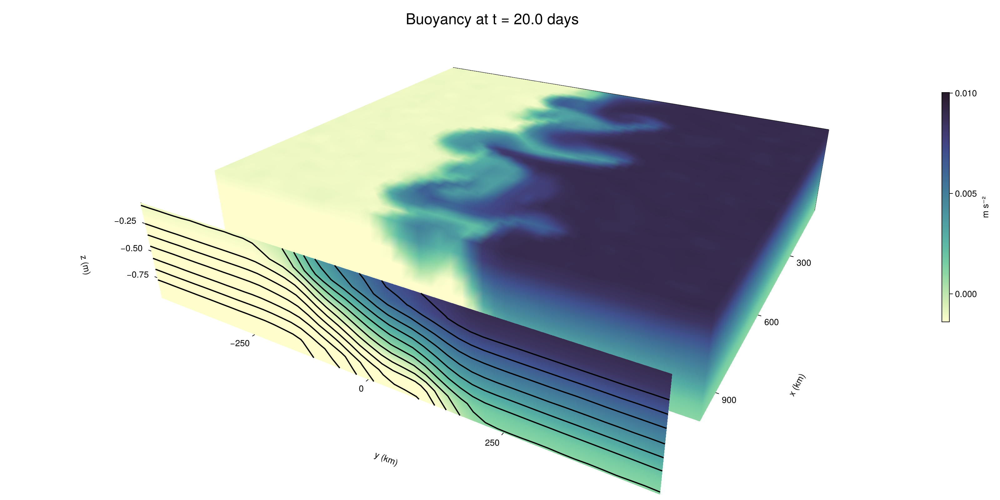

Baroclinic adjustment
In this example, we simulate the evolution and equilibration of a baroclinically unstable front.
Install dependencies
First let's make sure we have all required packages installed.
using Pkg
pkg"add Oceananigans, CairoMakie"using Oceananigans
using Oceananigans.UnitsGrid
We use a three-dimensional channel that is periodic in the x direction:
Lx = 1000kilometers # east-west extent [m]
Ly = 1000kilometers # north-south extent [m]
Lz = 1kilometers # depth [m]
grid = RectilinearGrid(size = (48, 48, 8),
x = (0, Lx),
y = (-Ly/2, Ly/2),
z = (-Lz, 0),
topology = (Periodic, Bounded, Bounded))48×48×8 RectilinearGrid{Float64, Periodic, Bounded, Bounded} on CPU with 3×3×3 halo
├── Periodic x ∈ [0.0, 1.0e6) regularly spaced with Δx=20833.3
├── Bounded y ∈ [-500000.0, 500000.0] regularly spaced with Δy=20833.3
└── Bounded z ∈ [-1000.0, 0.0] regularly spaced with Δz=125.0Model
We built a HydrostaticFreeSurfaceModel with an ImplicitFreeSurface solver. Regarding Coriolis, we use a beta-plane centered at 45° South.
model = HydrostaticFreeSurfaceModel(; grid,
coriolis = BetaPlane(latitude = -45),
buoyancy = BuoyancyTracer(),
tracers = :b,
momentum_advection = WENO(),
tracer_advection = WENO())HydrostaticFreeSurfaceModel{CPU, RectilinearGrid}(time = 0 seconds, iteration = 0)
├── grid: 48×48×8 RectilinearGrid{Float64, Periodic, Bounded, Bounded} on CPU with 3×3×3 halo
├── timestepper: QuasiAdamsBashforth2TimeStepper
├── tracers: b
├── closure: Nothing
├── buoyancy: BuoyancyTracer with ĝ = NegativeZDirection()
├── free surface: ImplicitFreeSurface with gravitational acceleration 9.80665 m s⁻²
│ └── solver: FFTImplicitFreeSurfaceSolver
├── advection scheme:
│ ├── momentum: WENO reconstruction order 5
│ └── b: WENO reconstruction order 5
└── coriolis: BetaPlane{Float64}We start our simulation from rest with a baroclinically unstable buoyancy distribution. We use ramp(y, Δy), defined below, to specify a front with width Δy and horizontal buoyancy gradient M². We impose the front on top of a vertical buoyancy gradient N² and a bit of noise.
"""
ramp(y, Δy)
Linear ramp from 0 to 1 between -Δy/2 and +Δy/2.
For example:
```
y < -Δy/2 => ramp = 0
-Δy/2 < y < -Δy/2 => ramp = y / Δy
y > Δy/2 => ramp = 1
```
"""
ramp(y, Δy) = min(max(0, y/Δy + 1/2), 1)
N² = 1e-5 # [s⁻²] buoyancy frequency / stratification
M² = 1e-7 # [s⁻²] horizontal buoyancy gradient
Δy = 100kilometers # width of the region of the front
Δb = Δy * M² # buoyancy jump associated with the front
ϵb = 1e-2 * Δb # noise amplitude
bᵢ(x, y, z) = N² * z + Δb * ramp(y, Δy) + ϵb * randn()
set!(model, b=bᵢ)Let's visualize the initial buoyancy distribution.
using CairoMakie
# Build coordinates with units of kilometers
x, y, z = 1e-3 .* nodes(grid, (Center(), Center(), Center()))
b = model.tracers.b
fig, ax, hm = heatmap(view(b, 1, :, :),
colormap = :deep,
axis = (xlabel = "y [km]",
ylabel = "z [km]",
title = "b(x=0, y, z, t=0)",
titlesize = 24))
Colorbar(fig[1, 2], hm, label = "[m s⁻²]")
fig
Simulation
Now let's build a Simulation.
simulation = Simulation(model, Δt=20minutes, stop_time=20days)Simulation of HydrostaticFreeSurfaceModel{CPU, RectilinearGrid}(time = 0 seconds, iteration = 0)
├── Next time step: 20 minutes
├── Elapsed wall time: 0 seconds
├── Wall time per iteration: NaN days
├── Stop time: 20 days
├── Stop iteration : Inf
├── Wall time limit: Inf
├── Callbacks: OrderedDict with 4 entries:
│ ├── stop_time_exceeded => Callback of stop_time_exceeded on IterationInterval(1)
│ ├── stop_iteration_exceeded => Callback of stop_iteration_exceeded on IterationInterval(1)
│ ├── wall_time_limit_exceeded => Callback of wall_time_limit_exceeded on IterationInterval(1)
│ └── nan_checker => Callback of NaNChecker for u on IterationInterval(100)
├── Output writers: OrderedDict with no entries
└── Diagnostics: OrderedDict with no entriesWe add a TimeStepWizard callback to adapt the simulation's time-step,
conjure_time_step_wizard!(simulation, IterationInterval(20), cfl=0.2, max_Δt=20minutes)Also, we add a callback to print a message about how the simulation is going,
using Printf
wall_clock = Ref(time_ns())
function print_progress(sim)
u, v, w = model.velocities
progress = 100 * (time(sim) / sim.stop_time)
elapsed = (time_ns() - wall_clock[]) / 1e9
@printf("[%05.2f%%] i: %d, t: %s, wall time: %s, max(u): (%6.3e, %6.3e, %6.3e) m/s, next Δt: %s\n",
progress, iteration(sim), prettytime(sim), prettytime(elapsed),
maximum(abs, u), maximum(abs, v), maximum(abs, w), prettytime(sim.Δt))
wall_clock[] = time_ns()
return nothing
end
add_callback!(simulation, print_progress, IterationInterval(100))Diagnostics/Output
Here, we save the buoyancy, $b$, at the edges of our domain as well as the zonal ($x$) average of buoyancy.
u, v, w = model.velocities
ζ = ∂x(v) - ∂y(u)
B = Average(b, dims=1)
U = Average(u, dims=1)
V = Average(v, dims=1)
filename = "baroclinic_adjustment"
save_fields_interval = 0.5day
slicers = (east = (grid.Nx, :, :),
north = (:, grid.Ny, :),
bottom = (:, :, 1),
top = (:, :, grid.Nz))
for side in keys(slicers)
indices = slicers[side]
simulation.output_writers[side] = JLD2OutputWriter(model, (; b, ζ);
filename = filename * "_$(side)_slice",
schedule = TimeInterval(save_fields_interval),
overwrite_existing = true,
indices)
end
simulation.output_writers[:zonal] = JLD2OutputWriter(model, (; b=B, u=U, v=V);
filename = filename * "_zonal_average",
schedule = TimeInterval(save_fields_interval),
overwrite_existing = true)JLD2OutputWriter scheduled on TimeInterval(12 hours):
├── filepath: ./baroclinic_adjustment_zonal_average.jld2
├── 3 outputs: (b, u, v)
├── array type: Array{Float64}
├── including: [:grid, :coriolis, :buoyancy, :closure]
├── file_splitting: NoFileSplitting
└── file size: 30.7 KiBNow we're ready to run.
@info "Running the simulation..."
run!(simulation)
@info "Simulation completed in " * prettytime(simulation.run_wall_time)[ Info: Running the simulation...
[ Info: Initializing simulation...
[00.00%] i: 0, t: 0 seconds, wall time: 20.520 seconds, max(u): (0.000e+00, 0.000e+00, 0.000e+00) m/s, next Δt: 20 minutes
[ Info: ... simulation initialization complete (22.016 seconds)
[ Info: Executing initial time step...
[ Info: ... initial time step complete (17.093 seconds).
[06.94%] i: 100, t: 1.389 days, wall time: 31.057 seconds, max(u): (1.246e-01, 1.169e-01, 1.589e-03) m/s, next Δt: 20 minutes
[13.89%] i: 200, t: 2.778 days, wall time: 917.184 ms, max(u): (2.130e-01, 1.670e-01, 1.814e-03) m/s, next Δt: 20 minutes
[20.83%] i: 300, t: 4.167 days, wall time: 943.477 ms, max(u): (2.829e-01, 2.160e-01, 1.772e-03) m/s, next Δt: 20 minutes
[27.78%] i: 400, t: 5.556 days, wall time: 906.908 ms, max(u): (3.559e-01, 2.843e-01, 1.675e-03) m/s, next Δt: 20 minutes
[34.72%] i: 500, t: 6.944 days, wall time: 885.530 ms, max(u): (4.504e-01, 3.786e-01, 1.886e-03) m/s, next Δt: 20 minutes
[41.67%] i: 600, t: 8.333 days, wall time: 925.362 ms, max(u): (5.618e-01, 5.274e-01, 2.060e-03) m/s, next Δt: 20 minutes
[48.61%] i: 700, t: 9.722 days, wall time: 868.241 ms, max(u): (7.184e-01, 8.393e-01, 3.115e-03) m/s, next Δt: 20 minutes
[55.56%] i: 800, t: 11.111 days, wall time: 958.075 ms, max(u): (1.088e+00, 1.086e+00, 4.257e-03) m/s, next Δt: 20 minutes
[62.50%] i: 900, t: 12.500 days, wall time: 1.093 seconds, max(u): (1.371e+00, 1.100e+00, 5.319e-03) m/s, next Δt: 20 minutes
[69.44%] i: 1000, t: 13.889 days, wall time: 1.041 seconds, max(u): (1.483e+00, 1.201e+00, 3.827e-03) m/s, next Δt: 20 minutes
[76.39%] i: 1100, t: 15.278 days, wall time: 927.210 ms, max(u): (1.312e+00, 1.099e+00, 3.625e-03) m/s, next Δt: 20 minutes
[83.33%] i: 1200, t: 16.667 days, wall time: 895.087 ms, max(u): (1.266e+00, 1.208e+00, 2.516e-03) m/s, next Δt: 20 minutes
[90.28%] i: 1300, t: 18.056 days, wall time: 893.375 ms, max(u): (1.300e+00, 1.209e+00, 3.443e-03) m/s, next Δt: 20 minutes
[97.22%] i: 1400, t: 19.444 days, wall time: 953.659 ms, max(u): (1.319e+00, 1.142e+00, 3.130e-03) m/s, next Δt: 20 minutes
[ Info: Simulation is stopping after running for 55.499 seconds.
[ Info: Simulation time 20 days equals or exceeds stop time 20 days.
[ Info: Simulation completed in 55.537 seconds
Visualization
All that's left is to make a pretty movie. Actually, we make two visualizations here. First, we illustrate how to make a 3D visualization with Makie's Axis3 and Makie.surface. Then we make a movie in 2D. We use CairoMakie in this example, but note that using GLMakie is more convenient on a system with OpenGL, as figures will be displayed on the screen.
using CairoMakieThree-dimensional visualization
We load the saved buoyancy output on the top, north, and east surface as FieldTimeSerieses.
filename = "baroclinic_adjustment"
sides = keys(slicers)
slice_filenames = NamedTuple(side => filename * "_$(side)_slice.jld2" for side in sides)
b_timeserieses = (east = FieldTimeSeries(slice_filenames.east, "b"),
north = FieldTimeSeries(slice_filenames.north, "b"),
top = FieldTimeSeries(slice_filenames.top, "b"))
B_timeseries = FieldTimeSeries(filename * "_zonal_average.jld2", "b")
times = B_timeseries.times
grid = B_timeseries.grid48×48×8 RectilinearGrid{Float64, Periodic, Bounded, Bounded} on CPU with 3×3×3 halo
├── Periodic x ∈ [0.0, 1.0e6) regularly spaced with Δx=20833.3
├── Bounded y ∈ [-500000.0, 500000.0] regularly spaced with Δy=20833.3
└── Bounded z ∈ [-1000.0, 0.0] regularly spaced with Δz=125.0We build the coordinates. We rescale horizontal coordinates to kilometers.
xb, yb, zb = nodes(b_timeserieses.east)
xb = xb ./ 1e3 # convert m -> km
yb = yb ./ 1e3 # convert m -> km
Nx, Ny, Nz = size(grid)
x_xz = repeat(x, 1, Nz)
y_xz_north = y[end] * ones(Nx, Nz)
z_xz = repeat(reshape(z, 1, Nz), Nx, 1)
x_yz_east = x[end] * ones(Ny, Nz)
y_yz = repeat(y, 1, Nz)
z_yz = repeat(reshape(z, 1, Nz), grid.Ny, 1)
x_xy = x
y_xy = y
z_xy_top = z[end] * ones(grid.Nx, grid.Ny)Then we create a 3D axis. We use zonal_slice_displacement to control where the plot of the instantaneous zonal average flow is located.
fig = Figure(size = (1600, 800))
zonal_slice_displacement = 1.2
ax = Axis3(fig[2, 1],
aspect=(1, 1, 1/5),
xlabel = "x (km)",
ylabel = "y (km)",
zlabel = "z (m)",
xlabeloffset = 100,
ylabeloffset = 100,
zlabeloffset = 100,
limits = ((x[1], zonal_slice_displacement * x[end]), (y[1], y[end]), (z[1], z[end])),
elevation = 0.45,
azimuth = 6.8,
xspinesvisible = false,
zgridvisible = false,
protrusions = 40,
perspectiveness = 0.7)Axis3()We use data from the final savepoint for the 3D plot. Note that this plot can easily be animated by using Makie's Observable. To dive into Observables, check out Makie.jl's Documentation.
n = length(times)41Now let's make a 3D plot of the buoyancy and in front of it we'll use the zonally-averaged output to plot the instantaneous zonal-average of the buoyancy.
b_slices = (east = interior(b_timeserieses.east[n], 1, :, :),
north = interior(b_timeserieses.north[n], :, 1, :),
top = interior(b_timeserieses.top[n], :, :, 1))
# Zonally-averaged buoyancy
B = interior(B_timeseries[n], 1, :, :)
clims = 1.1 .* extrema(b_timeserieses.top[n][:])
kwargs = (colorrange=clims, colormap=:deep, shading=NoShading)
surface!(ax, x_yz_east, y_yz, z_yz; color = b_slices.east, kwargs...)
surface!(ax, x_xz, y_xz_north, z_xz; color = b_slices.north, kwargs...)
surface!(ax, x_xy, y_xy, z_xy_top; color = b_slices.top, kwargs...)
sf = surface!(ax, zonal_slice_displacement .* x_yz_east, y_yz, z_yz; color = B, kwargs...)
contour!(ax, y, z, B; transformation = (:yz, zonal_slice_displacement * x[end]),
levels = 15, linewidth = 2, color = :black)
Colorbar(fig[2, 2], sf, label = "m s⁻²", height = Relative(0.4), tellheight=false)
title = "Buoyancy at t = " * string(round(times[n] / day, digits=1)) * " days"
fig[1, 1:2] = Label(fig, title; fontsize = 24, tellwidth = false, padding = (0, 0, -120, 0))
rowgap!(fig.layout, 1, Relative(-0.2))
colgap!(fig.layout, 1, Relative(-0.1))
save("baroclinic_adjustment_3d.png", fig)
Two-dimensional movie
We make a 2D movie that shows buoyancy $b$ and vertical vorticity $ζ$ at the surface, as well as the zonally-averaged zonal and meridional velocities $U$ and $V$ in the $(y, z)$ plane. First we load the FieldTimeSeries and extract the additional coordinates we'll need for plotting
ζ_timeseries = FieldTimeSeries(slice_filenames.top, "ζ")
U_timeseries = FieldTimeSeries(filename * "_zonal_average.jld2", "u")
B_timeseries = FieldTimeSeries(filename * "_zonal_average.jld2", "b")
V_timeseries = FieldTimeSeries(filename * "_zonal_average.jld2", "v")
xζ, yζ, zζ = nodes(ζ_timeseries)
yv = ynodes(V_timeseries)
xζ = xζ ./ 1e3 # convert m -> km
yζ = yζ ./ 1e3 # convert m -> km
yv = yv ./ 1e3 # convert m -> km49-element Vector{Float64}:
-500.0
-479.1666666666667
-458.3333333333333
-437.5
-416.6666666666667
-395.8333333333333
-375.0
-354.1666666666667
-333.3333333333333
-312.5
-291.6666666666667
-270.8333333333333
-250.0
-229.16666666666666
-208.33333333333334
-187.5
-166.66666666666666
-145.83333333333334
-125.0
-104.16666666666667
-83.33333333333333
-62.5
-41.666666666666664
-20.833333333333332
0.0
20.833333333333332
41.666666666666664
62.5
83.33333333333333
104.16666666666667
125.0
145.83333333333334
166.66666666666666
187.5
208.33333333333334
229.16666666666666
250.0
270.8333333333333
291.6666666666667
312.5
333.3333333333333
354.1666666666667
375.0
395.8333333333333
416.6666666666667
437.5
458.3333333333333
479.1666666666667
500.0Next, we set up a plot with 4 panels. The top panels are large and square, while the bottom panels get a reduced aspect ratio through rowsize!.
set_theme!(Theme(fontsize=24))
fig = Figure(size=(1800, 1000))
axb = Axis(fig[1, 2], xlabel="x (km)", ylabel="y (km)", aspect=1)
axζ = Axis(fig[1, 3], xlabel="x (km)", ylabel="y (km)", aspect=1, yaxisposition=:right)
axu = Axis(fig[2, 2], xlabel="y (km)", ylabel="z (m)")
axv = Axis(fig[2, 3], xlabel="y (km)", ylabel="z (m)", yaxisposition=:right)
rowsize!(fig.layout, 2, Relative(0.3))To prepare a plot for animation, we index the timeseries with an Observable,
n = Observable(1)
b_top = @lift interior(b_timeserieses.top[$n], :, :, 1)
ζ_top = @lift interior(ζ_timeseries[$n], :, :, 1)
U = @lift interior(U_timeseries[$n], 1, :, :)
V = @lift interior(V_timeseries[$n], 1, :, :)
B = @lift interior(B_timeseries[$n], 1, :, :)Observable([-0.009390665114403694 -0.008108209664997838 -0.006876252656748215 -0.005637837052746176 -0.0043835522075007 -0.003116357076074248 -0.0018847253825684189 -0.0006242342645907539; -0.009363133304808395 -0.00814147940284137 -0.006881052175351475 -0.00562006791198852 -0.004355674623597803 -0.0031230984629705256 -0.001878447021671674 -0.0006344982880033145; -0.009373664317911706 -0.008120194075465938 -0.006851555746593412 -0.005616493891789867 -0.0043804696313305 -0.003137970941238861 -0.0018457363385371549 -0.0006190024759281706; -0.009359898189702636 -0.008131769473281182 -0.006856796453353781 -0.005632117492249309 -0.00437614000887668 -0.0031313056773443516 -0.001869041901330134 -0.00062164366986672; -0.009359582461570263 -0.008121689003459399 -0.006877449069320603 -0.005604618327722039 -0.004390320644255643 -0.003148232203669596 -0.0018837998085960298 -0.0005988267016911598; -0.00938208411870995 -0.008105724090015797 -0.006881717362800803 -0.005594828095466624 -0.004363786960618691 -0.0031102501563934795 -0.0018971883064762803 -0.0006183842098622497; -0.009391809546845502 -0.00813211555066744 -0.006876367516437971 -0.005628319989643732 -0.004392179436450676 -0.003121927763748398 -0.0018694978118826656 -0.0006322423545020076; -0.009373374348998157 -0.008139185352531103 -0.006872597669804061 -0.005604682074462555 -0.004374395621754252 -0.003152517740128622 -0.0018780962322551772 -0.0006272264355400362; -0.00937797788085414 -0.00811060565509617 -0.006878995678377453 -0.0056201309186752965 -0.004376451490587852 -0.003118359338105094 -0.0018630982791428222 -0.0006154167985285398; -0.00936770751333673 -0.008130528962595874 -0.006874245895320867 -0.005602736450819205 -0.004377386757384145 -0.003122593958226399 -0.0018917959797254628 -0.00061633680814556; -0.009377984157990705 -0.008122120162124291 -0.006856779209430842 -0.00562776410689574 -0.004377983182608863 -0.003131015286173796 -0.0018825395687451362 -0.000651584301023703; -0.009356577442651606 -0.008139431223224103 -0.006876630239337468 -0.005598053149114703 -0.004392634102237996 -0.0031305404527489037 -0.0018784073391360772 -0.0006029260604129011; -0.00939294211619745 -0.008116618532988042 -0.006859391839284273 -0.005627420274757963 -0.004367173982866039 -0.0031267707122850513 -0.001858270892083844 -0.0006138474623964845; -0.009374236970018766 -0.008140749661718153 -0.006887792375015064 -0.005623017559938714 -0.004366372774137275 -0.0031069740824558197 -0.0018677254139428327 -0.0006122498030012724; -0.009358237030685628 -0.008140908697356846 -0.006874470568434793 -0.005627888657575984 -0.004378214382862571 -0.003136494118027402 -0.0018720153220855424 -0.0006325784376644226; -0.009371994846410575 -0.008125886281427292 -0.006896138340917117 -0.005629442082878186 -0.00436675091410232 -0.0031357939125770035 -0.001881505877511714 -0.0006148647616414318; -0.009371297115196034 -0.008136572645288423 -0.006877579590186371 -0.005641004361384388 -0.004372589142051919 -0.003134112822239788 -0.0018999265032805333 -0.0006475256863908768; -0.009378724413732432 -0.008139096341018115 -0.006871810890254351 -0.00563829766892942 -0.0043719650012912295 -0.0031528047920765883 -0.0018616217485138344 -0.0006237480903060524; -0.009372102082540556 -0.008110929814039597 -0.006872575504243397 -0.00562614435910731 -0.004374056831360517 -0.003119854374853527 -0.0018801371564983555 -0.0006434618893712512; -0.009362462409525308 -0.0081172395129909 -0.006874022212830004 -0.005637464344860399 -0.00438501757380962 -0.0031254692256937854 -0.0018656423694603898 -0.0006363761870244173; -0.009397942539067535 -0.008124622539270565 -0.0068927873391102 -0.005614521894558602 -0.004391481521285222 -0.0031237189906726513 -0.0018939780742201482 -0.0006048046220975323; -0.009340337651265072 -0.00811893783331215 -0.006885501967113769 -0.0056335062011460685 -0.004384418755394955 -0.003143463774494598 -0.001878465705641056 -0.000625995145006346; -0.007528374652592671 -0.006261914548885844 -0.004991574192482913 -0.0037489849441036754 -0.002488223129542754 -0.0012168785164365153 -4.342294402599586e-6 0.0012420089700230612; -0.00540699469283349 -0.004199730139118503 -0.002908070800889411 -0.0016489517892353822 -0.0004071884108318453 0.0008204375674354755 0.002076170321744158 0.0033420596154258592; -0.003330217919688436 -0.002058535405258374 -0.0008401997346470887 0.00040338836647984665 0.0016601936112481588 0.0029134173613482514 0.004193081072157791 0.00542639529294989; -0.0012509140643864934 1.7534372241394706e-5 0.0012812629215832006 0.0024861113758009013 0.003758762568305098 0.004998764883769231 0.006256723249611859 0.007495490919577861; 0.0006253638533702211 0.0018632865268339066 0.0031005367858673856 0.00439233432169027 0.005640956996438321 0.006886102787392094 0.008115390554458875 0.009372464888454014; 0.0006403921389863371 0.001889298174686991 0.003138602240874548 0.004374540136289633 0.005611264402200065 0.00687987135684483 0.008131897711237727 0.009388466744356137; 0.0006320823327684812 0.0018834926638736183 0.0030958943140666478 0.004369135501328326 0.0056249601210535604 0.006853360524213925 0.00810898297442243 0.009362507578123038; 0.0006091865509249285 0.001868393410714225 0.0030935267669784227 0.004395765773361125 0.005617981678994489 0.006898907121298959 0.008103490015309881 0.009403197339963525; 0.000590767151204726 0.001864788475444119 0.0031371643362244996 0.0043631548505632155 0.005618575221655091 0.0068853026092612875 0.008113138919736381 0.009381062990198417; 0.0006172974484730331 0.0018931838643347746 0.0031284621105923116 0.004364985757193932 0.005623738344497485 0.0068944993934386065 0.00813813102131928 0.00938240231095166; 0.000609235355035153 0.0018945150100381609 0.003121655471118482 0.004367428105659928 0.005635618968431451 0.006859252613863093 0.008132829843959436 0.009374990272386198; 0.0006399626800210467 0.0018885266204287864 0.00311488246640444 0.004364307278154903 0.005597108446853145 0.006865332478549008 0.008152571078028971 0.009392084720214914; 0.0006140764599341311 0.0018810209721106975 0.0031180366618155605 0.00435212605451791 0.005606410232304929 0.006882072772937436 0.008135301799006523 0.009378231155660012; 0.0006446254030307925 0.0018660718836329279 0.003122062756886096 0.004365927637036524 0.0056292652023196554 0.006870114742649647 0.008136768739933171 0.009383985892707001; 0.0006125116651190086 0.0018416343009538018 0.00312916655361228 0.004370461520472209 0.005643107143634797 0.006863618915684186 0.008091530253031545 0.009371167106024562; 0.0006389388078772489 0.0018923734278484424 0.0031293927173508176 0.004375027458698748 0.005640232071996382 0.006880109425159551 0.008098388011171577 0.009371311888198909; 0.0006084683083855027 0.001874378437345739 0.003123659512777327 0.004378118902116621 0.005623644037593461 0.00687728145794696 0.008110951362357913 0.009377166692589015; 0.000624624665716545 0.0018641174346372535 0.003126163304582371 0.004386892574798701 0.005635108659528892 0.006893739625700057 0.008112440463183644 0.009383254543133336; 0.0006372483070645562 0.0018861241913914282 0.003142949511010358 0.004368500812358336 0.005633655941453604 0.0068856999280910505 0.008133367716830845 0.009369607819940019; 0.0006325735229633241 0.0018817726620342374 0.00311782663075786 0.004366624163528814 0.005602384149219475 0.00689092418977684 0.008117162336620383 0.009394441480148542; 0.0006267282450565302 0.0018610520718516119 0.0031414090402113425 0.004359295409892154 0.005624515020262208 0.006852697514078483 0.00815840096271476 0.009374002581339077; 0.0006186838228437484 0.0018848045810464225 0.00312340782072295 0.004379472267648067 0.005641517674881293 0.006881764530480459 0.008126970423095412 0.009369129778735035; 0.0006323804201243179 0.0018826257134312123 0.003109625979745692 0.004366107868461083 0.005635314580585546 0.006884794096732831 0.008153787843673375 0.009356930701320215; 0.0006146273865028468 0.0018671263027771883 0.003150460099788315 0.00439800738928916 0.005633293209571483 0.006869820213972712 0.008130823459486493 0.009401986606170911; 0.0006127810229724814 0.001859472517413175 0.0031207886863497646 0.004340367182361227 0.005634412405521005 0.006862623152526184 0.00812375624473391 0.009363804937586104; 0.0006202568747362198 0.001879435899038599 0.0031345311485002237 0.004396395613634244 0.0056074445332855855 0.006888477015194611 0.008140706875467934 0.009368967460549722])
and then build our plot:
hm = heatmap!(axb, xb, yb, b_top, colorrange=(0, Δb), colormap=:thermal)
Colorbar(fig[1, 1], hm, flipaxis=false, label="Surface b(x, y) (m s⁻²)")
hm = heatmap!(axζ, xζ, yζ, ζ_top, colorrange=(-5e-5, 5e-5), colormap=:balance)
Colorbar(fig[1, 4], hm, label="Surface ζ(x, y) (s⁻¹)")
hm = heatmap!(axu, yb, zb, U; colorrange=(-5e-1, 5e-1), colormap=:balance)
Colorbar(fig[2, 1], hm, flipaxis=false, label="Zonally-averaged U(y, z) (m s⁻¹)")
contour!(axu, yb, zb, B; levels=15, color=:black)
hm = heatmap!(axv, yv, zb, V; colorrange=(-1e-1, 1e-1), colormap=:balance)
Colorbar(fig[2, 4], hm, label="Zonally-averaged V(y, z) (m s⁻¹)")
contour!(axv, yb, zb, B; levels=15, color=:black)Finally, we're ready to record the movie.
frames = 1:length(times)
record(fig, filename * ".mp4", frames, framerate=8) do i
n[] = i
endThis page was generated using Literate.jl.